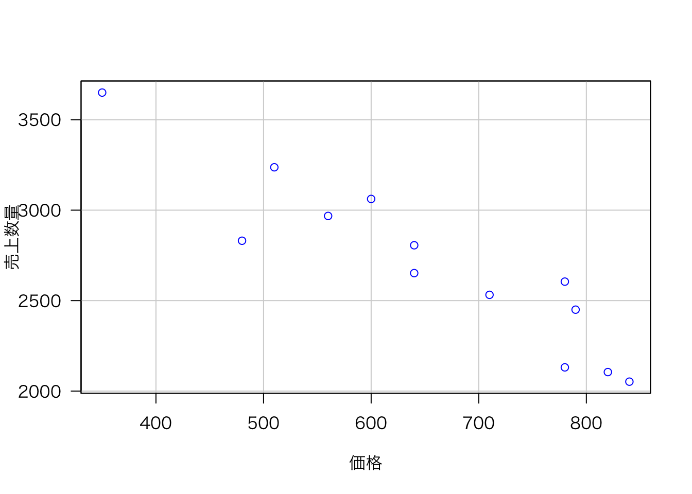
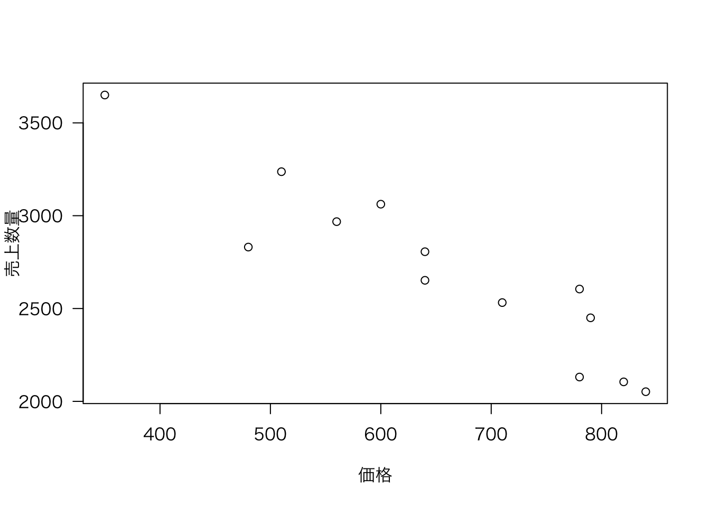
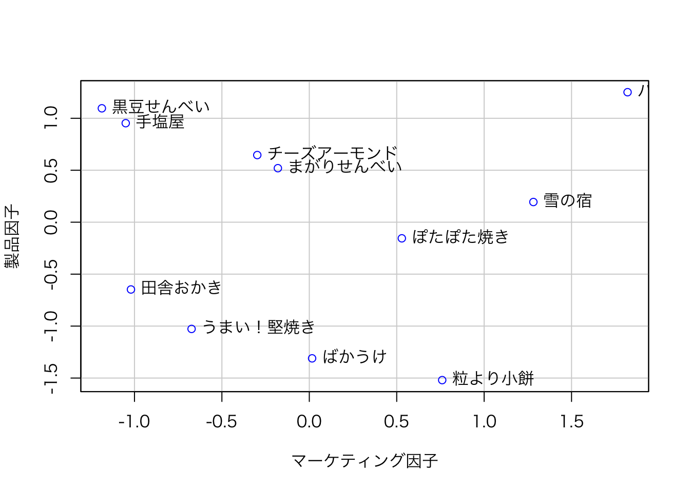
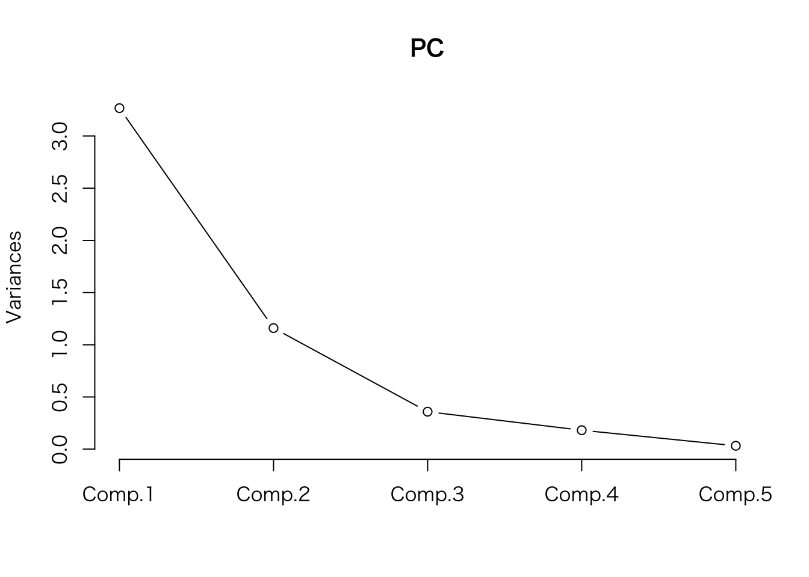
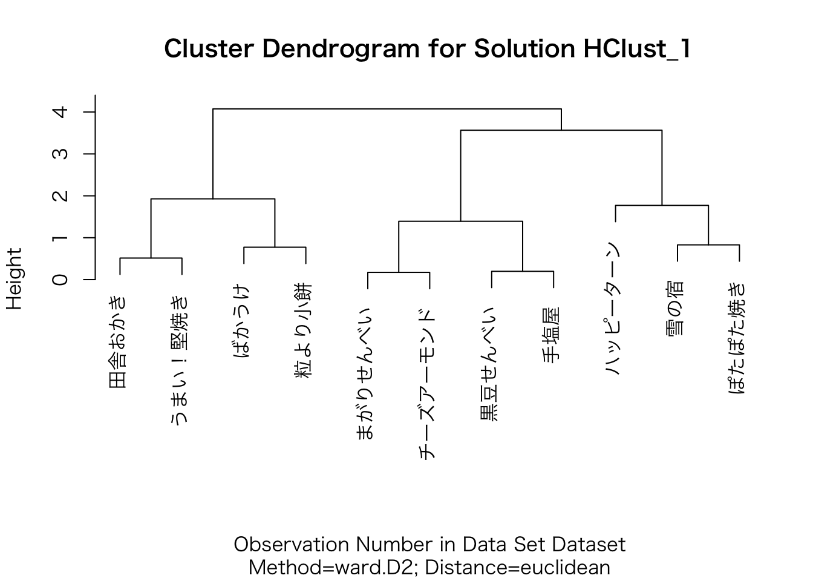
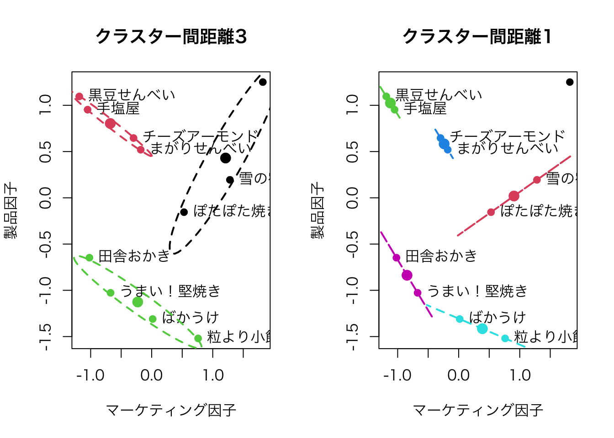

UniformSamples <- as.data.frame(matrix(runif(1*100, min=0, max=1), ncol=100))
rownames(UniformSamples) <- "sample"
colnames(UniformSamples) <- paste("obs", 1:100, sep="")照井伸彦・佐藤忠彦（2022）『現代マーケティング・リサーチ—市場を読み解くデータ分析 新版』有斐閣 は，Rを用いたマーケティング・リサーチの入門書として位置づけられる。
本書の想定読者は，Rを初めて使用する学生であり，プログラミングに戸惑うことが予想されるため，Rコマンダーを利用して解説している。 しかし，Rに慣れた読者にとっては，Rコマンダーの処理がブラックボックス化されており，かえって分かりにくい。 そこで，本サイトでは，Rコマンダーによって生成されたコードと，それと同じ処理をRに習熟したユーザーが記述する場合のコードを並べて示し，理解を助ける構成としている。
また，本書にはいくつか誤植があり，本書の指示通りに操作を進めると，Rコマンダーの利用において行き詰まる箇所がある。 そのような部分については適宜修正しながら進めることを推奨する。
第3章 サンプリング
4 単純無作為サンプリング
4.1 Rコマンダーによる乱数表作成
▶ Rコマンダーによって生成されたコード（p. 37）
▶ 手入力するコード
x <- UniformSamples * 100
rx <- round(x) + 1
ux <- unique(rx)
ux[1:10]▶ 一般的なRコード
乱数を生成する際に，あらかじめ set.seed() を実行しておくと，同じ操作を繰り返したときに同じ乱数を再現できる。
set.seed(100)set.seed() のかっこ中の数字は何でもよい。
ux <- unique(ceiling(runif(100, min = 0, max = 100)))
ux[1:10] [1] 31 26 56 6 47 49 82 38 55 18または
ux <- sample(1:100, 100, replace = FALSE)
ux[1:10] [1] 82 53 3 5 44 85 28 52 25 42第5章 市場反応分析（I）
3 相関分析
3.2 売上と価格のデータ：散布図の作成
▶ Rコマンダーによって生成されたコード（p. 84）
Dataset <- read.table(file.choose(), header=TRUE, stringsAsFactors=TRUE, sep="", na.strings="NA", dec=".", strip.white=TRUE)
scatterplot(売上~価格, regLine=FALSE, smooth=FALSE, boxplots=FALSE, data=Dataset)▶ 一般的なRコード
library(car)
Dataset <- read.csv(file.choose(), header = TRUE, sep = "", strip.white = TRUE)
names(Dataset)[1] <- "売上数量"図5.2の縦軸が「売上数量」となっていたため，列名を変更した。 一般的に「売上」は売上高を指すため，価格と売上の相関関係を図示するのはやや不自然である（価格が上がれば，売上数量が一定の場合，売上高も上昇する）。 この点を踏まえると，本書では図が修正されたものの，本文の修正が反映されないまま出版された可能性があると考えられる。 なお，p. 102の本文では「売上数量」と明確に同じ意味で使わる「売上」の記述が見られる。
Dataset 売上数量 価格 販促
1 2052 840 0
2 2105 820 0
3 2450 790 1
4 2131 780 0
5 2806 640 1
6 2532 710 0
7 3650 350 1
8 2968 560 0
9 2605 780 1
10 2652 640 0
11 3062 600 1
12 3237 510 1
13 2831 480 0scatterplot(売上数量 ~ 価格, regLine = FALSE, smooth = FALSE, boxplots = FALSE, las = 1, data = Dataset)
scatterplot() は car パッケージの関数であるため，最初に car パッケージをロードしている。
あるいは，次のように汎用的な作図関数 plot() を使ってもよい。
Dataset <- read.csv(file.choose(), header = TRUE, sep = "", strip.white = TRUE)
names(Dataset)[1] <- "売上数量"
Dataset
plot(売上数量 ~ 価格, las = 1, data = Dataset) 売上数量 価格 販促
1 2052 840 0
2 2105 820 0
3 2450 790 1
4 2131 780 0
5 2806 640 1
6 2532 710 0
7 3650 350 1
8 2968 560 0
9 2605 780 1
10 2652 640 0
11 3062 600 1
12 3237 510 1
13 2831 480 0
3.3 売上と価格に相関はあるか：標本相関係数の検定
▶ Rコマンダーによって生成されたコード（p. 87）
with(Dataset, cor.test(価格, 売上, alternative="two.sided", method="pearson"))▶ 一般的なRコード
cor.test(Dataset$価格, Dataset$売上数量, alternative = "two.sided", method = "pearson")
Pearson's product-moment correlation
data: Dataset$価格 and Dataset$売上数量
t = -8.1457, df = 11, p-value = 5.5e-06
alternative hypothesis: true correlation is not equal to 0
95 percent confidence interval:
-0.9780506 -0.7661642
sample estimates:
cor
-0.9261709 4 売上と価格の市場反応分析：回帰モデル
▶ Rコマンダーによって生成されたコード（p. 91）
RegModel.1 <- lm(売上~価格, data=Dataset)
summary(RegModel.1)▶ 一般的なRコード
RegModel_1 <- lm(売上数量 ~ 価格, data = Dataset)
summary(RegModel_1)
Call:
lm(formula = 売上数量 ~ 価格, data = Dataset)
Residuals:
Min 1Q Median 3Q Max
-368.25 -110.38 -0.84 124.15 269.81
Coefficients:
Estimate Std. Error t value Pr(>|t|)
(Intercept) 4581.7523 236.7640 19.352 7.61e-10 ***
価格 -2.8802 0.3536 -8.146 5.50e-06 ***
---
Signif. codes: 0 '***' 0.001 '**' 0.01 '*' 0.05 '.' 0.1 ' ' 1
Residual standard error: 184.1 on 11 degrees of freedom
Multiple R-squared: 0.8578, Adjusted R-squared: 0.8449
F-statistic: 66.35 on 1 and 11 DF, p-value: 5.5e-06昔は変数名（先頭ではなく途中）に . が使用されることもあったが，最近は使用しないのが一般的である。
4.1 価格反応係数推定値の精度と信頼区間
▶ Rコマンダーによって生成されたコード（p. 93）
Confint(RegModel.1, level=0.95)▶ 一般的なRコード
Confint(RegModel_1, level = 0.95) Estimate 2.5 % 97.5 %
(Intercept) 4581.752298 4060.638183 5102.866414
価格 -2.880209 -3.658452 -2.101967Confint()はcarパッケージの関数である。
5 複数の説明変数を持つ市場反応分析：重回帰モデル
5.1 価格と販売促進の効果
▶ Rコマンダーによって生成されたコード（p. 98）
RegModel.2 <- lm(売上~価格+販促, data=Dataset)
summary(RegModel.2)▶ 一般的なRコード
RegModel_2 <- lm(売上数量 ~ 価格 + 販促, data = Dataset)
summary(RegModel_2)
Call:
lm(formula = 売上数量 ~ 価格 + 販促, data = Dataset)
Residuals:
Min 1Q Median 3Q Max
-182.876 -54.165 0.597 63.301 162.349
Coefficients:
Estimate Std. Error t value Pr(>|t|)
(Intercept) 4263.2262 148.6279 28.684 6.18e-11 ***
価格 -2.6028 0.2077 -12.531 1.94e-07 ***
販促 297.1607 60.1706 4.939 0.000588 ***
---
Signif. codes: 0 '***' 0.001 '**' 0.01 '*' 0.05 '.' 0.1 ' ' 1
Residual standard error: 104.1 on 10 degrees of freedom
Multiple R-squared: 0.9586, Adjusted R-squared: 0.9504
F-statistic: 115.9 on 2 and 10 DF, p-value: 1.209e-076 弾力性測定モデル
6.1 交差価格弾力性による競合関係の測定
▶ Rコマンダーによって生成されたコード（p. 105）
Dataset <- read.table(file.choose(), header=TRUE, stringsAsFactors=TRUE, sep="", na.strings="NA", dec=".", strip.white=TRUE)
Dataset$LY1 <- with(Dataset, log(Y1))
Dataset$LX1 <- with(Dataset, log(X1))
Dataset$LX2 <- with(Dataset, log(X2))
RegModel.3 <- lm(LY1~LX1+LX2, data=Dataset)
summary(RegModel.3)▶ 一般的なRコード
Dataset <- read.table(file.choose(), header = TRUE, sep = "", strip.white = TRUE)
Dataset$LY1 <- log(Dataset$Y1)
Dataset$LX1 <- log(Dataset$X1)
Dataset$LX2 <- log(Dataset$X2)
RegModel_3 <- lm(LY1 ~ LX1 + LX2, data = Dataset)
summary(RegModel_3)
Call:
lm(formula = LY1 ~ LX1 + LX2, data = Dataset)
Residuals:
Min 1Q Median 3Q Max
-0.52555 -0.13583 -0.05818 0.18692 0.38784
Coefficients:
Estimate Std. Error t value Pr(>|t|)
(Intercept) 7.720 7.097 1.088 0.286
LX1 -7.033 1.290 -5.451 9.08e-06 ***
LX2 6.504 1.187 5.479 8.42e-06 ***
---
Signif. codes: 0 '***' 0.001 '**' 0.01 '*' 0.05 '.' 0.1 ' ' 1
Residual standard error: 0.2199 on 27 degrees of freedom
Multiple R-squared: 0.6221, Adjusted R-squared: 0.5941
F-statistic: 22.22 on 2 and 27 DF, p-value: 1.973e-06第6章 市場の発見と知覚マップ
5 Rコマンダーでの手順
▶ Rコマンダーによって生成されたコード（p. 119）
Dataset <- read.table("clipboard", header=TRUE, stringsAsFactors=TRUE, sep="¥t", na.strings="NA", dec=".", strip.white=TRUE)
local({
.FA <- factanal(~キャンペーンイベント+パッケージデザイン+広告宣伝+素材栄養素+味, factors=2, rotation="varimax", scores="regression", data=Dataset)
print(.FA)
Dataset <<- within(Dataset, {
F2 <- .FA$scores[,2]
F1 <- .FA$scores[,1]
})
})
scatterplot(F2~F1, regLine=FALSE, smooth=FALSE, id=list(method='identify'), boxplots=FALSE, xlab="マーケティング因子", ylab="製品因子", data=Dataset)▶ 一般的なRコード
library(car)
Dataset <- read.csv("clipboard", header = TRUE, sep = "¥t")
FA <- factanal(
~ キャンペーンイベント + パッケージデザイン + 広告宣伝 + 素材栄養素 + 味,
factors = 2,
rotation = "varimax",
scores = "regression",
data = Dataset
)
print(FA)
Dataset$F1 <- FA$scores[, 1]
Dataset$F2 <- FA$scores[, 2]
rownames(Dataset) <- Dataset$製品名
scatterplot(
F2 ~ F1,
regLine = FALSE,
smooth = FALSE,
id = list(method = 'identify'),
boxplots = FALSE,
xlab = "マーケティング因子",
ylab = "製品因子",
data = Dataset
)
Call:
factanal(x = ~キャンペーンイベント + パッケージデザイン + 広告宣伝 + 素材栄養素 + 味, factors = 2, data = Dataset, scores = "regression", rotation = "varimax", rownames = 1)
Uniquenesses:
キャンペーンイベント パッケージデザイン 広告宣伝
0.158 0.318 0.005
素材栄養素 味
0.407 0.005
Loadings:
Factor1 Factor2
キャンペーンイベント 0.886 0.237
パッケージデザイン 0.696 0.445
広告宣伝 0.985 0.158
素材栄養素 0.119 0.761
味 0.371 0.926
Factor1 Factor2
SS loadings 2.392 1.715
Proportion Var 0.478 0.343
Cumulative Var 0.478 0.821
Test of the hypothesis that 2 factors are sufficient.
The chi square statistic is 4.16 on 1 degree of freedom.
The p-value is 0.0415 
1つの関数が長い場合は，引数のカンマの後で改行した方が見やすいため，コードを書く際に改行を入れるのが一般的である。 このとき，改行した行の先頭にはスペースを2つ入れる。
なお，クリップボードからデータを読むコードはOSによって異なる。 上に示したコードはWindowsの場合であり，macOSの場合，Dataset <- read.csv(pipe("pbpaste"), header = TRUE, sep = "\t") とする。 また，タブを表す記号 ¥t はWindowsの場合であり，macOSでは \t とする。
さらに，本文の指示通りだと，図6.6の知覚マップには製品名ではなく，データフレーム Dataset の行番号が表示されることになる。 知覚マップ上に製品名を表示するには，rownames(Dataset) <- Dataset$製品名 を追加するか，あるいは，read.csv() の引数に row.names = 1 を指定する必要がある，
6 その他の問題
6.2 共通因子数の設定
▶ Rコマンダーによって生成されたコード（p. 84）
local({
.PC <- princomp(~キャンペーンイベント+パッケージデザイン+広告宣伝+素材栄養素+味, cor=TRUE, data=Dataset)
cat("\nComponent loadings:\n")
print(unclass(loadings(.PC)))
cat("\nComponent variances:\n")
print(.PC$sd^2)
cat("\n")
print(summary(.PC))
screeplot(.PC)
})▶ 一般的なRコード
PC <- princomp( ~ キャンペーンイベント + パッケージデザイン + 広告宣伝 + 素材栄養素 + 味, cor = TRUE, data = Dataset)
result <- list(
"Component Loadings" = unclass(loadings(PC)),
"Component Variances" = PC$sd^2,
"Summary" = summary(PC)
)
print(result)$`Component Loadings`
Comp.1 Comp.2 Comp.3 Comp.4 Comp.5
キャンペーンイベント 0.4714356 0.3769183 0.4597706 0.3613854 0.5419342
パッケージデザイン 0.4781955 0.1375293 -0.7804739 -0.2277185 0.3023567
広告宣伝 0.4871404 0.3588612 0.2664691 -0.4602804 -0.5924939
素材栄養素 0.3058296 -0.7333420 0.2987866 -0.4441059 0.2866606
味 0.4671617 -0.4152667 -0.1385361 0.6391062 -0.4262212
$`Component Variances`
Comp.1 Comp.2 Comp.3 Comp.4 Comp.5
3.2672933 1.1601639 0.3588058 0.1815096 0.0322274
$Summary
Importance of components:
Comp.1 Comp.2 Comp.3 Comp.4 Comp.5
Standard deviation 1.8075656 1.0771091 0.59900398 0.42603945 0.179519902
Proportion of Variance 0.6534587 0.2320328 0.07176115 0.03630192 0.006445479
Cumulative Proportion 0.6534587 0.8854914 0.95725260 0.99355452 1.000000000screeplot(PC)
screeplot(PC, type = "lines")
スクリープロットは折れ線グラフの方が一般的である。
7 サブマーケットと市場構造
▶ Rコマンダーによって生成されたコード（p. 84）
HClust.1 <- hclust(dist(model.matrix(~-1 + F1+F2, Dataset)) , method= "ward")
plot(HClust.1, main= "Cluster Dendrogram for Solution HClust.1", xlab= "Observation Number in Data Set Dataset", sub="Method=ward; Distance=euclidian")▶ 一般的なRコード
dist_1 <- dist(Dataset[, c("F1", "F2")], method = "euclidean")
HClust_1 <- hclust(dist_1, method = "ward.D2")
plot(
HClust_1,
main = "Cluster Dendrogram for Solution HClust_1",
xlab = "Observation Number in Data Set Dataset",
sub = "Method=ward.D2; Distance=euclidean"
)
ウォード法は ward や ward.D ではなく，ward.D2 を指定する。 詳細な説明は関数 hclust() のヘルプを参照のこと。
なお，知覚マップのところで rownames(Dataset) <- Dataset$製品名 を追加した場合は，図6.9とは異なり，デンドログラムに製品名が表示される。 製品名ではなく番号を使ってデンドログラムを描くには，次のコードを実行する。
rownames(Dataset) <- 1:nrow(Dataset)
dist_1 <- dist(Dataset[, c("F1", "F2")], method = "euclidean")
HClust_1 <- hclust(dist_1, method = "ward.D2")
plot(
HClust_1,
main = "Cluster Dendrogram for Solution HClust_1",
xlab = "Observation Number in Data Set Dataset",
sub = "Method=ward.D2; Distance=euclidean"
)
以下は，図6.10の作図のためのコードである。 なお，クラスター分析に ward.D2 を使用しているため，クラスター間距離が本書の記述とは異なる。
clusters <- cutree(HClust_1, h = 3)
Dataset$Cluster <- as.factor(clusters)
par(mfrow = c(1, 2))
plot(
Dataset$F1, Dataset$F2,
col = as.numeric(Dataset$Cluster),
pch = 19,
xlab = "マーケティング因子", ylab = "製品因子",
main = "クラスター間距離3"
)
text(Dataset$F1, Dataset$F2, labels = Dataset$製品名, pos = 4, cex = 1)
for (k in unique(Dataset$Cluster)) {
dataEllipse(
Dataset$F1[Dataset$Cluster == k],
Dataset$F2[Dataset$Cluster == k],
add = TRUE, col = k, lty = 2,
levels = 0.5)
}
clusters <- cutree(HClust_1, h = 1)
Dataset$Cluster <- as.factor(clusters)
plot(
Dataset$F1, Dataset$F2,
col = as.numeric(Dataset$Cluster),
pch = 19,
xlab = "マーケティング因子", ylab = "製品因子",
main = "クラスター間距離1"
)
text(Dataset$F1, Dataset$F2, labels = Dataset$製品名, pos = 4, cex = 1)
for (k in unique(Dataset$Cluster)) {
cluster_data <- Dataset[Dataset$Cluster == k, c("F1", "F2")]
if (nrow(cluster_data) > 1) {
dataEllipse(
cluster_data$F1,
cluster_data$F2,
add = TRUE, col = k, lty = 2,
levels = 0.5)
}
}
dataEllipse() はデータのばらつきをもとに楕円を描くため，2点しかないと警告が出て，直線が描かれる点に注意が必要である。
図を横に並べて表示する設定を行ったため，次のコードを実行してデフォルトの設定に戻しておく。
par(mfrow = c(1, 1))